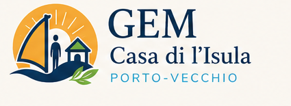

Soutien financier
Contribuer aux activités, aux sorties, au matériel et à la vie quotidienne du lieu.

Soutenir le GEM, c’est participer à un espace où les personnes fragilisées peuvent retrouver une place, un rythme et des liens.
Le soutien peut prendre plusieurs formes, de la contribution financière au don de matériel, du bénévolat ponctuel au partenariat local.
Contribuer aux activités, aux sorties, au matériel et à la vie quotidienne du lieu.
Aider avec du matériel créatif, cuisine, jardinage ou équipement validé par l’équipe.
Permettre à des acteurs du territoire de soutenir une maison de lien social.
Le site doit expliquer clairement comment aider, sans pression ni culpabilisation.